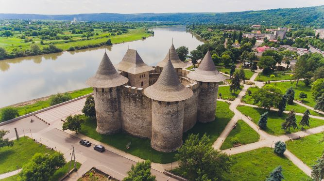

10

250 EURO / person
Moldova (/mɒlˈdoʊvə/ (listen) mol-DOH-və, sometimes UK: /ˈmɒldəvə/ MOL-də-və;[13][14][15] Romanian pronunciation: [molˈdova]), officially the Republic of Moldova (Romanian: Republica Moldova), is a landlocked country in Eastern Europe.[16] It is bordered by Romania to the west and Ukraine to the north, east, and south.[17] The unrecognised state of Transnistria lies across the Dniester river on the country's eastern border with Ukraine. Moldova's capital and largest city is Chișinău. Most of Moldovan territory was a part of the Principality of Moldavia from the 14th century until 1812, when it was ceded to the Russian Empire by the Ottoman Empire (to which Moldavia was a vassal state) and became known as Bessarabia. In 1856, southern Bessarabia was returned to Moldavia, which three years later united with Wallachia to form Romania, but Russian rule was restored over the whole of the region in 1878. During the 1917 Russian Revolution, Bessarabia briefly became an autonomous state within the Russian Republic. In February 1918, it declared independence and then integrated into Romania later that year following a vote of its assembly. The decision was disputed by Soviet Russia, which in 1924 established, within the Ukrainian SSR, a so-called Moldavian autonomous republic on partially Moldovan-inhabited territories to the east of Bessarabia.

In 1940, as a consequence of the Molotov–Ribbentrop Pact, Romania was compelled to cede Bessarabia and Northern Bukovina to the Soviet Union, leading to the creation of the Moldavian Soviet Socialist Republic (Moldavian SSR). On 27 August 1991, as the dissolution of the Soviet Union was underway, the Moldavian SSR declared independence and took the name Moldova.[18] However, the strip of Moldovan territory on the east bank of the Dniester has been under the de facto control of the breakaway government of Transnistria since 1990. The constitution of Moldova was adopted in 1994, and the country became a parliamentary republic with a president as head of state and a prime minister as head of government. Moldova is the second poorest country in Europe by GDP per official capita after Ukraine and much of its GDP is dominated by the service sector.[19] It has one of the lowest Human Development Indexes in Europe, ranking 76th in the world (2022).[12] Moldova is a member state of the United Nations, the Council of Europe, the World Trade Organization, the Organization for Security and Cooperation in Europe, the GUAM Organization for Democracy and Economic Development, the Commonwealth of Independent States, the Organization of the Black Sea Economic Cooperation, and the Association Trio. Moldova has been an official candidate for membership in the European Union since June 2022.[20]